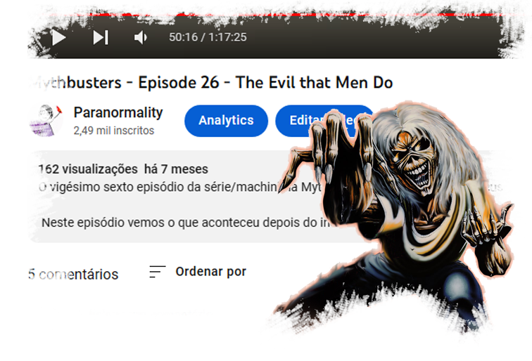
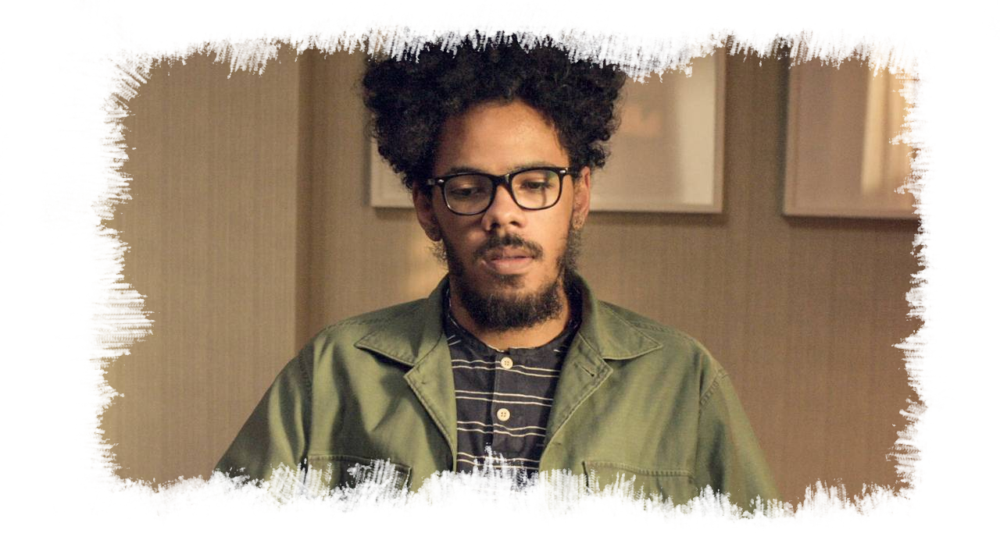
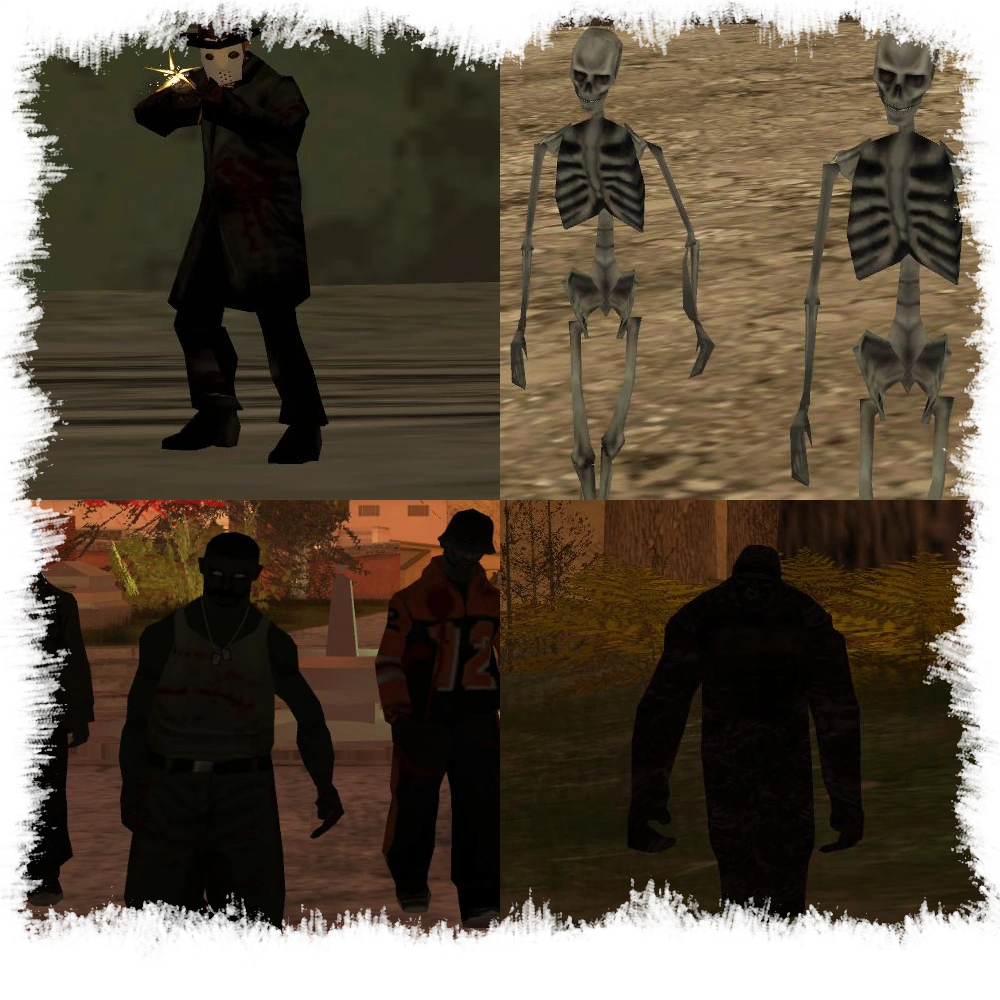

Pegou a referência?

Todos os episódios dos Mythbusters tem nomes que referenciam alguma música das bandas favoritas do criador da série. Porém, isso não é apenas para um efeito estético. As letras dessas músicas têm uma certa ligação com o enredo de cada episódio que elas dão nome. Será que você consegue pegar todas as referências de músicas?
Maldito youtube
O Rômulo, o criador da série, perdeu seu antigo canal por não saber lidar com os direitos autorais antigamente por ele só ter apenas 14 anos de idade. Hoje, ele está com seu novo canal e fazendo remake de vários episódios dos Mythbusters. Ele também tem um canal mais antigo que ainda existe, porém, ele esqueceu a senha e não gosta de divulgar esse canal por ter trabalhos muito amadores.
Os mais famosos entre nós

Entre os dubladores da série, há um dublador que já foi ator em séries da Netflix e da HBO. O
Bruno Lourenço
já fez alguns personagens nos Mythbusters por ser amigo do criador da série. O Bruno já fez o personagem Silvio na série Onisciente da Netflix e também fez o personagem Rudel na série Psi da HBO. O cara é muito talentoso!
Gameplays
Além dos Mythbusters, o criador da série também faz gameplays e lives. Dê uma olhada!
O Nascimento dos Mythbusters

A ideia para criar os Mythbusters vieram de noites em claro entre 2008 e 2009 jogando GTA San Andreas e vários dias assistindo documentários como Alienígenas do Passado, Monster Quest e vários outros programas sobre criptozoologia. Além disso, havia várias lendas entre os jogadores de GTA San Andreas sobre a existência de monstros no jogo. O criador da série então aprendeu do zero como editar vídeo, escrever roteiros e gravar vídeos e começou a série com a ajuda de três amigos, Cloud, Franko e Deco.